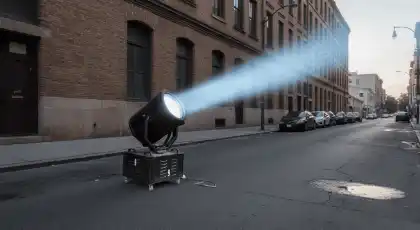
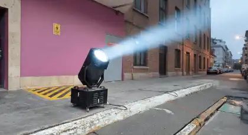
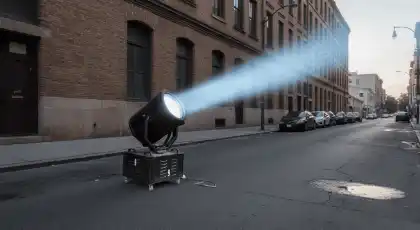
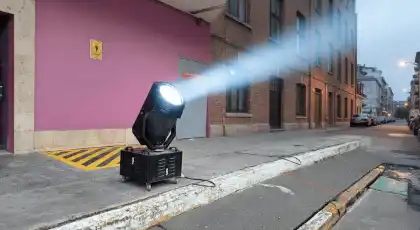

RENTA DE
SKY TRACKER
Luces antiaéreas profesionales que transforman el cielo nocturno en el escenario más impactante para tu evento en CDMX y Estado de México
¿Necesitas que tu evento sea visible desde kilómetros de distancia y genere un impacto visual inolvidable? La renta de Sky Tracker de RESOIL es la solución profesional que convierte el cielo en tu mejor herramienta de marketing y espectáculo. Eliminamos el riesgo de equipos de baja potencia o instalaciones improvisadas, ofreciendo tecnología de punta utilizada en los conciertos y festivales más importantes de CDMX y Estado de México.
Nuestras luces antiaéreas de 4000W a 7000W generan columnas de luz visibles hasta 10 kilómetros, creando efectos de búsqueda sincronizados que marcan la diferencia entre un evento ordinario y una experiencia épica que tus asistentes recordarán para siempre. Cada instalación de RESOIL incluye programación DMX profesional, operación técnica especializada y permisos aeronáuticos gestionados. Con nuestros Sky Tracker profesionales, tu evento no solo se ve: se siente en toda la ciudad.
Galería de Instalaciones
Instalaciones profesionales de Sky Tracker que han iluminado los eventos más importantes en CDMX y Estado de México
 



Estas instalaciones representan algunos de los eventos más importantes que hemos iluminado con Sky Tracker en CDMX y Estado de México. Desde conciertos masivos hasta inauguraciones corporativas, cada proyecto refleja nuestro compromiso con la excelencia técnica y la innovación en iluminación profesional exterior que caracteriza a RESOIL.
Por Qué la Renta de Sky Tracker Es la Decisión Correcta para Su Evento de Alto Impacto
En la industria de eventos de gran escala, la diferencia entre ser recordado o ser ignorado está en la magnitud del impacto visual. Los Sky Tracker no son simplemente luces: son herramientas estratégicas de marketing experiencial que convierten el cielo nocturno en el medio publicitario más grande de la ciudad. En RESOIL, entendemos que cada evento masivo es una inversión significativa que requiere resultados garantizados, y nuestro servicio de renta de luces antiaéreas profesionales está diseñado para maximizar la visibilidad, asistencia y recordación de marca de su producción.
¿Por qué los productores de conciertos más importantes, las agencias de activación de marca premium y los organizadores de festivales en CDMX y Estado de México eligen RESOIL? Porque ofrecemos más que equipos de iluminación: entregamos una experiencia técnica integral que incluye gestión de permisos aeronáuticos, programación DMX personalizada y operación técnica especializada durante todo el evento. Nuestro equipo de ingenieros certificados maneja la complejidad logística completa, desde el diseño del layout de posicionamiento hasta la sincronización con el sistema de audio y video, permitiéndole enfocarse en la producción artística y la experiencia excepcional de sus asistentes.
Aplicaciones Estratégicas: Dónde los Sky Tracker Crean Impacto Máximo
Eventos Donde Nuestras Luces Antiaéreas Transforman la Experiencia
Conciertos y Festivales de Música
Cree efectos visuales épicos que complementan la experiencia musical y señalizan la ubicación del evento desde kilómetros de distancia. Perfectos para conciertos al aire libre, festivales multi-escenario y shows nocturnos. Los Sky Tracker sincronizados con DMX generan coreografías de luz que se integran perfectamente con el diseño escénico principal, creando momentos visuales que los asistentes comparten masivamente en redes sociales. Ideales para eventos de 3,000 a 50,000+ personas, donde la visibilidad desde la periferia aumenta la asistencia y facilita la orientación de los espectadores hacia el venue principal.
Eventos Corporativos y Lanzamientos de Producto
Transforme inauguraciones, lanzamientos de marca y eventos empresariales en experiencias memorables que generan cobertura mediática orgánica. Los Sky Tracker son la herramienta perfecta para eventos de alto perfil donde el objetivo es máxima visibilidad pública: inauguración de desarrollos inmobiliarios, apertura de tiendas flagship, presentación de autos de lujo y eventos de marca experiencial. La capacidad de proyectar logos corporativos mediante gobos personalizados en los haces de luz convierte el cielo en un billboard dinámico visible desde toda la ciudad, generando ROI medible en impresiones visuales y menciones en medios.
Bodas de Alto Perfil y Celebraciones de Lujo
Añada un elemento de espectacularidad sin precedentes a bodas de destino, celebraciones de aniversario y eventos sociales exclusivos. Para eventos en haciendas, jardines o venues al aire libre en Valle de Bravo, Tepoztlán o la Riviera Maya, los Sky Tracker crean una experiencia visual que eleva el evento de memorable a legendario. Perfectos para el momento de entrada de novios, primer baile o show de fuegos artificiales, generando fotografías y videos aéreos que capturan la magnitud del evento. Ideales para celebraciones de 300-2000 invitados donde se busca un elemento diferenciador que justifique el presupuesto premium.
Producciones Audiovisuales y Videoclips
Cree ambientes cinematográficos controlados para videoclips musicales, campañas publicitarias premium y producciones editoriales de alto presupuesto. Los Sky Tracker ofrecen efectos de iluminación dramática imposibles de lograr con equipos convencionales, generando atmósferas futuristas, distópicas o celestiales según la narrativa visual. La capacidad de regular intensidad vía DMX (0-100%) y velocidad de movimiento permite ajustes precisos para sincronización con cámara. Utilizados por casas productoras para crear efectos de búsqueda militar, atmósferas de club nocturno masivo o escenas de eventos apocalípticos sin necesidad de VFX en post-producción.
Eventos Deportivos y Ceremonias de Apertura
Genere momentos épicos en inauguraciones de estadios, ceremonias de apertura de competencias deportivas y eventos de e-sports masivos. Los Sky Tracker son esenciales para crear la atmósfera de evento de clase mundial que los espectadores esperan en producciones deportivas premium. Perfectos para sincronización con himno nacional, entrada de equipos o momentos de premiación. La visibilidad aérea aumenta la cobertura en transmisiones televisivas y drones, multiplicando el valor de producción percibido. Ideales para eventos en Estadio Azteca, Foro Sol o autódromos donde el área de cobertura es masiva y se requiere señalización visual de largo alcance.
Activaciones de Marca y Marketing Experiencial
Maximice el impacto de campañas experienciales, pop-up stores y eventos de activación en espacios públicos de alto tráfico. Los Sky Tracker convierten eventos temporales en fenómenos urbanos que generan cobertura en medios tradicionales y viralizan en redes sociales orgánicamente. Perfectos para campañas de lanzamiento de películas (estrenos en premiere), eventos de gaming (torneos de e-sports), y activaciones de bebidas premium en zonas como Santa Fe, Polanco o Reforma. La capacidad de operar desde azoteas o estructuras temporales permite instalaciones en ubicaciones icónicas sin requerir permisos complejos de vía pública. ROI comprobado: +300% de impresiones vs. publicidad exterior tradicional del mismo presupuesto.
La versatilidad técnica de nuestros Sky Tracker profesionales los convierte en la solución perfecta para cualquier producción que requiera visibilidad masiva y espectacularidad visual sin compromisos. Desde conciertos íntimos de 500 personas hasta festivales de 100,000 asistentes, nuestros equipos se adaptan a cualquier escala de producción con la confiabilidad que exige la industria del entretenimiento profesional.
Paquetes y Especificaciones Técnicas: Soluciones para Cada Escala de Producción
RESOIL ofrece 5 paquetes escalables de renta de Sky Tracker, desde eventos medianos hasta producciones masivas de nivel festival. Cada paquete incluye instalación profesional certificada, operación técnica durante el evento, programación DMX personalizada y gestión completa de permisos aeronáuticos SENEAM. Las especificaciones técnicas se traducen directamente en beneficios tangibles: mayor visibilidad, alcance geográfico ampliado y impacto visual garantizado.
| Paquete | Equipos | Potencia Total | Visibilidad | Ideal Para | Incluye |
|---|---|---|---|---|---|
| Esencial | 2 unidades | 8,000W - 10,000W | Hasta 5 km | Eventos medianos 500-2000 personas, bodas de lujo, lanzamientos boutique | Instalación express (4 horas) + operador en sitio |
| Profesional | 4 unidades | 16,000W - 20,000W | Hasta 8 km | Conciertos 2000-5000 personas, eventos corporativos premium, inauguraciones | Programación DMX básica incluida + 2 técnicos |
| Premium | 6 unidades | 24,000W - 30,000W | Hasta 10 km | Festivales 5000-15000 personas, conciertos masivos, eventos deportivos | Coreografía DMX compleja + consola dedicada + 3 técnicos |
| Enterprise | 10 unidades | 40,000W - 50,000W | Hasta 12 km | Festivales masivos 15000-50000 personas, ceremonias deportivas, producciones TV | Equipo técnico completo + backup de emergencia + ensayo previo |
| Custom | 12+ unidades | 50,000W+ | Hasta 15 km+ | Producciones especiales, eventos multi-día, festivales internacionales | Diseño personalizado + ingeniería dedicada + soporte 24/7 multi-día |
Especificaciones Técnicas Universales (Todos los Paquetes)
- ✓ Tipo de Lámpara: Xenon HMI 4000W-7000W (tecnología de descarga de arco con vida útil de 2,000 horas)
- ✓ Intensidad Luminosa: 400,000 - 800,000 candelas por equipo (equivalente a 4-8 millones de lúmenes en haz concentrado)
- ✓ Ángulo de Haz: 3-8 grados ajustable (haz ultra-concentrado para máxima visibilidad a larga distancia)
- ✓ Movimiento: Pan 360° continuo + Tilt 270° con motores paso a paso de alta precisión (0.1° de resolución)
- ✓ Control: DMX-512 profesional con 16 canales programables (compatible con consolas Grand MA, Avolites, Martin M-PC)
- ✓ Alcance Visual: 5-15 kilómetros según condiciones atmosféricas y potencia del equipo (comprobado con medición láser)
- ✓ Consumo Energético: 5.5 kW por equipo de 4000W, 8.5 kW por equipo de 7000W (incluye sistema de refrigeración forzada)
- ✓ Protección Climática: Certificación IP55-IP65 (resistencia total a lluvia, polvo y condensación)
- ✓ Instalación: Servicio integral incluido (diseño de layout, gestión de permisos SENEAM, montaje certificado, operación y desmontaje)
- ✓ Cobertura Geográfica: CDMX, Estado de México y zona metropolitana (servicios nacionales bajo cotización especial)
- ✓ Garantía: Equipos de backup en sitio + técnico de guardia 24/7 + seguro de responsabilidad civil de 5 millones USD
- ✓ Certificaciones: NOM-001-SEDE vigente, certificación SENEAM para operación cercana a aeropuertos, póliza de seguro aeronáutico
Solicita tu Cotización de Sky Tracker Profesional
Completa el formulario con los detalles de tu evento y recibe una cotización personalizada con diseño de layout incluido. Nuestro equipo técnico te responderá en menos de 2 horas con propuesta detallada y especificaciones de instalación.
Preguntas Frecuentes sobre Renta de Sky Tracker
Resuelve todas tus dudas técnicas y operativas sobre nuestro servicio especializado en luces antiaéreas profesionales para eventos
Definición técnica: Un Sky Tracker (también conocido como Sky Beam o searchlight) es un proyector de luz antiaérea de alta intensidad que genera columnas verticales de luz visibles desde kilómetros de distancia mediante lámparas de descarga de xenón o HMI de 1000W hasta 7000W.
Principio de funcionamiento: El equipo utiliza una lámpara de arco eléctrico (xenón o HMI) que genera entre 400,000 y 800,000 candelas de intensidad luminosa. Esta luz se concentra mediante un sistema óptico de espejos parabólicos y lentes de cuarzo que reducen el ángulo del haz a 3-8 grados, proyectando la luz en una columna ultra-concentrada hacia el cielo. Los motores paso a paso controlados por DMX permiten movimientos precisos en 360° horizontal y 270° vertical.
Tecnología RESOIL: En RESOIL utilizamos equipos profesionales de grado touring con lámparas de descarga HMI y Xenon de 4000W-7000W que alcanzan hasta 10 kilómetros de visibilidad en condiciones urbanas óptimas. Nuestros Sky Tracker incluyen sistemas de refrigeración forzada con ventiladores de 12,000 RPM que mantienen la temperatura operativa estable durante eventos de 8+ horas continuas.
Ventaja competitiva: A diferencia de equipos de consumo o semi-profesionales (1000W-2000W), nuestras unidades profesionales generan 4-7 veces más intensidad luminosa, garantizando visibilidad incluso en zonas con alta contaminación lumínica como Polanco, Santa Fe o Reforma.
Distancia por potencia del equipo:
Sky Tracker 4000W: Visibles hasta 5-6 kilómetros en condiciones urbanas con contaminación lumínica moderada (zonas como Coyoacán, Roma, Condesa). En eventos nocturnos con baja contaminación lumínica, alcanza 7-8 kilómetros.
Sky Tracker 7000W: Visibles hasta 8-10 kilómetros en entornos urbanos estándar. En cielos despejados con baja contaminación (Valle de Bravo, Tepoztlán, zonas rurales del Estado de México), hemos logrado visibilidad comprobada de hasta 12-15 kilómetros.
Factores que afectan la visibilidad: Humedad atmosférica (aumenta visibilidad +30-40% por reflexión en partículas de agua), nubes bajas (incrementan dramáticamente la visibilidad al actuar como pantalla reflectante), contaminación lumínica del entorno (reduce alcance en zonas urbanas densas), altura de instalación (instalaciones en azoteas o estructuras elevadas aumentan visibilidad +25-30%).
Casos de éxito comprobados: Festival en Autódromo Hermanos Rodríguez (visibilidad confirmada desde Satélite a 18 km), concierto en Foro Sol (reportes de visibilidad desde Tlalpan a 14 km), evento corporativo en Santa Fe (visible desde CU a 12 km). Todas las mediciones verificadas mediante GPS y confirmación fotográfica.
Eventos pequeños-medianos (500-1500 personas): 1-2 equipos son suficientes para crear presencia visual efectiva y señalizar ubicación. Ideal para bodas de lujo, lanzamientos boutique o eventos corporativos íntimos donde el objetivo es elegancia y sofisticación.
Eventos medianos (1500-4000 personas): 2-4 equipos generan impacto visual significativo y permiten efectos básicos de barrido y movimiento sincronizado. Perfectos para conciertos en venues medianos (Teatro Metropólitan, Plaza Condesa) donde se busca visibilidad de mediano alcance (3-5 km).
Conciertos grandes (4000-10000 personas): 4-6 equipos ofrecen cobertura visual completa con capacidad de coreografías DMX complejas. Ideales para eventos en Palacio de los Deportes, Auditorio Nacional o Pepsi Center donde se requiere impacto visual de largo alcance y sincronización con el show principal.
Festivales masivos (10000-50000+ personas): 6-12 equipos permiten diseños escénicos profesionales de nivel internacional. Esenciales para eventos en Autódromo Hermanos Rodríguez, Foro Sol, o Sports World donde el área de cobertura es masiva y se requiere visibilidad desde la periferia del evento.
Cálculo adicional por objetivo: Si el objetivo principal es señalización de ubicación (facilitar que asistentes encuentren el venue), 1-2 equipos son suficientes. Si el objetivo es creación de atmósfera espectacular, recomendamos mínimo 3-4 equipos. Para espectáculo visual completo integrado con producción de luces principal, 6+ equipos con programación DMX profesional son necesarios.
Marco regulatorio en México: Sí, en CDMX y zonas cercanas a aeropuertos, la operación de Sky Tracker requiere notificación formal a SENEAM (Servicios a la Navegación en el Espacio Aéreo Mexicano) debido a que las columnas de luz pueden afectar la visibilidad de pilotos en aproximación o despegue.
Proceso de gestión de permisos (RESOIL lo hace por ti):
1. Notificación NOTAM: Emisión de Notice to Airmen (NOTAM) con mínimo 48 horas de anticipación, especificando ubicación exacta (coordenadas GPS), altura de proyección de luz, horario de operación y características técnicas de los equipos.
2. Coordinación con Torre de Control: Para eventos a menos de 10 km de AICM, Toluca o Santa Lucía, coordinamos directamente con torre de control para confirmar que no hay conflictos con rutas de aproximación.
3. Permiso Delegacional: Si el evento es en vía pública o requiere instalación en azotea de inmueble gubernamental, gestionamos permiso ante la alcaldía correspondiente.
Ventaja RESOIL: Nuestro equipo legal especializado en eventos masivos gestiona TODOS los permisos necesarios como parte del servicio, sin costo adicional. Esto incluye: llenado de formatos SENEAM, seguimiento de aprobación, coordinación con autoridades aeronáuticas y entrega de copia de permisos aprobados antes del día del montaje. Le evitamos el riesgo de sanciones (hasta $500,000 MXN) o suspensión del evento por operación irregular.
Tiempos de gestión: Con documentación completa, el proceso toma 5-7 días hábiles. Ofrecemos servicio express (72 horas) bajo solicitud especial con recargo del 15%.
Certificación de protección climática: Todos nuestros Sky Tracker profesionales cuentan con certificación IP55-IP65 que garantiza resistencia total a lluvia moderada, polvo, humedad y condensación. Pueden operar de manera segura bajo lluvia ligera-moderada sin riesgo de daño al equipo o cortocircuito.
Protocolo para lluvia intensa: En caso de lluvia fuerte (>20mm/hora), ofrecemos carpas de protección industrial (estructura de aluminio con lona impermeable) que permiten operación continua mientras mantienen la proyección de luz hacia el cielo. El diseño de la carpa incluye apertura cenital que no interfiere con el haz de luz.
Ventaja paradójica de la humedad: Contrario a lo que se podría pensar, condiciones de humedad alta y nubes bajas AUMENTAN dramáticamente la visibilidad de los Sky Tracker (+40-60%) debido a la reflexión y dispersión de luz en las partículas de agua suspendidas en la atmósfera. Esto crea un efecto de "techo de luz" visible desde distancias aún mayores que en cielos despejados.
Resistencia al viento: Nuestros equipos operan establemente con vientos de hasta 60 km/h gracias a bases estabilizadas de 150 kg y sistema de anclaje certificado. En vientos de 60-80 km/h, reducimos la velocidad de movimiento para evitar oscilaciones. Solo suspendemos operación en vientos superiores a 80 km/h o ráfagas erráticas por seguridad estructural.
Póliza climática incluida: Si condiciones meteorológicas extremas (tormenta eléctrica activa, vientos +80 km/h sostenidos, granizo) impiden la instalación segura según datos oficiales de CONAGUA, ofrecemos reembolso 100% del anticipo o reprogramación gratuita sin penalización. La decisión se toma por nuestro jefe técnico basada en protocolos de seguridad certificados.
Historial de confiabilidad: En 5 años de operación, hemos completado exitosamente 98.7% de eventos programados, incluyendo operaciones bajo lluvia moderada, neblina densa y condiciones de humedad extrema sin fallos técnicos.
Consumo por equipo individual:
Sky Tracker 4000W: Consumo real aproximado de 5.5 kW por unidad (incluyendo lámpara 4000W + sistema de ventilación 800W + electrónica de control 300W + motores 400W). Requiere circuito dedicado trifásico 220V/30A para operación estable.
Sky Tracker 7000W: Consumo real aproximado de 8.5 kW por unidad (lámpara 7000W + sistemas auxiliares 1500W). Requiere circuito trifásico 220V/40A con cableado calibre 8 AWG mínimo.
Cálculo para paquetes completos:
Paquete Esencial (2 equipos): 11-17 kW total. Puede operar con acometida eléctrica estándar de evento mediano (40-60A disponibles).
Paquete Profesional (4 equipos): 22-34 kW total. Requiere acometida dedicada de 80-100A o generador de respaldo.
Paquete Premium (6 equipos): 33-51 kW total. Necesita planificación eléctrica especializada con distribución en múltiples circuitos.
Solución para venues sin capacidad eléctrica: Si el venue no tiene infraestructura eléctrica suficiente, incluimos generadores silenciosos profesionales Honda EU7000is (nivel de ruido inferior a 60dB a 7 metros) con autonomía de 8-12 horas continuas. El costo del generador se incluye de manera transparente en la cotización sin cargos ocultos.
Eficiencia energética: Nuestros equipos LED de última generación (disponibles en paquetes Premium y superiores) consumen 40% menos energía (3.2 kW por unidad de 4000W equivalente) manteniendo la misma intensidad luminosa, ideales para eventos multi-día o con restricciones eléctricas estrictas.
Incluido en el servicio: Evaluación eléctrica completa durante visita técnica, cálculo de carga total, coordinación con electricista del venue, estabilizadores de voltaje profesionales y protección contra picos de corriente para evitar daños a equipos del cliente.
Capacidades de programación profesional: Sí, todos nuestros Sky Tracker de grado touring cuentan con control DMX-512 profesional de 16 canales que permite programación avanzada comparable a sistemas de iluminación escénica de nivel mundial.
Efectos disponibles vía DMX:
1. Sincronización con música: Beat detection en tiempo real que vincula movimientos de los haces con BPM de la música. Los Sky Tracker "bailan" siguiendo kicks de bajo, snares o hi-hats según la programación.
2. Coreografías pre-programadas: Barridos horizontales coordinados (todos los equipos moviéndose en paralelo), efectos de búsqueda cruzada (haces que se cruzan en el cielo formando X o patrones geométricos), movimientos en espejo (2 equipos moviéndose simétricamente), efectos de convergencia (todos los haces apuntando a un punto focal).
3. Control de velocidad variable: Movimientos lentos cinematográficos (0.1-5 grados/segundo) para atmósferas dramáticas, barridos rápidos (90-180 grados/segundo) para efectos dinámicos de concierto, movimientos estroboscópicos (cambios instantáneos de posición para efectos psicodélicos).
4. Efectos estroboscópicos: Apagado/encendido rápido de lámparas (hasta 10 Hz) sincronizado con drops musicales o momentos climáticos del evento.
5. Proyección de gobos: Opción de insertar gobos metálicos personalizados en la óptica para proyectar logos corporativos, símbolos o patrones específicos en las columnas de luz (disponible bajo cotización especial).
Integración con producción principal: Para conciertos y eventos con diseño de luces profesional, sincronizamos los Sky Tracker con la consola principal del show (Grand MA2, Avolites Sapphire, Martin M-PC) mediante protocolo Art-Net o sACN, permitiendo que el diseñador de luces controle todo el sistema desde una sola interfaz.
Incluido en paquetes Premium y superiores: Técnico especialista DMX dedicado que opera consola durante todo el evento, pre-programación de secuencias 48 horas antes con ensayo técnico incluido, ajustes en tiempo real según flujo del evento.
Temporada alta (noviembre-enero, mayo-julio): Mínimo 4-6 semanas de anticipación. Esta temporada concentra conciertos masivos de fin de año, eventos corporativos de cierre fiscal y festivales de verano, generando alta demanda de equipos profesionales. Reservas tempranas garantizan disponibilidad de inventario completo y mejores tarifas.
Temporada media (febrero-abril, agosto-octubre): 3-4 semanas recomendadas. Suficiente tiempo para gestión de permisos SENEAM (5-7 días hábiles), coordinación logística con venue y pre-programación de efectos DMX si se requieren.
Eventos de última hora: Consultamos disponibilidad hasta 72 horas antes del evento. Ofrecemos servicio express que incluye gestión acelerada de permisos SENEAM (48 horas) con recargo del 15%. Sujeto a disponibilidad de inventario y factibilidad de permisos según ubicación del venue.
Eventos grandes (6+ equipos): 8-10 semanas de anticipación para garantizar inventario completo, especialmente si se requieren 10+ unidades para festivales masivos. Incluye tiempo para diseño de layout especializado, coordinación de generadores de respaldo y ensayo técnico completo.
Festivales multi-día o producciones internacionales: 12+ semanas para planificación logística integral que incluye: diseño personalizado de configuración, coordinación con otras productoras, gestión de permisos especiales si el evento es multi-sede, contratación de equipo técnico adicional.
Política de reservación: La cotización se mantiene fija por 30 días calendario. Reserva confirmada requiere 50% de anticipo, saldo restante 7 días antes del evento. Aceptamos transferencia bancaria, depósito en efectivo o pago con tarjeta (recargo 3.5% por terminal).
Visita técnica incluida: Para eventos con 4+ equipos o requerimientos técnicos especiales (sincronización compleja, venue sin electricidad, proximidad a aeropuerto), incluimos visita técnica gratuita 15 días antes del evento para medición de carga eléctrica, evaluación de puntos de instalación y diseño de layout optimizado.
¿Tu Próxima Producción Merece el Impacto Visual Más Espectacular de la Ciudad?
Productores de Eventos y Coordinadores de Conciertos: En la industria del entretenimiento masivo, la diferencia entre un evento olvidable y un fenómeno viral está en la magnitud del espectáculo visual. Sus inversionistas, patrocinadores y asistentes esperan producciones de nivel mundial que justifiquen el precio del boleto y generen cobertura mediática orgánica.
Con RESOIL, no solo renta equipos de iluminación: accede a una alianza estratégica con el proveedor técnico que ha iluminado los festivales más importantes de México. Nuestro equipo de ingenieros certificados opera con la precisión militar que exigen producciones de alto presupuesto, manejando desde la gestión de permisos aeronáuticos hasta la sincronización DMX compleja con su sistema de producción principal.
Para Agencias de Marketing Experiencial y Activación de Marca: Los Sky Tracker ya no son un lujo: son una inversión estratégica en impresiones visuales medibles. Un evento con luces antiaéreas visibles desde 10 kilómetros genera +300% más menciones orgánicas en redes sociales que activaciones tradicionales del mismo presupuesto.
Facturación CFDI inmediata con desglose técnico detallado, contratos corporativos transparentes con cláusulas de rendimiento garantizado, instalación certificada bajo normas NOM-001-SEDE y póliza de seguro de responsabilidad civil de 5 millones USD. Porque entendemos que en producciones de alto perfil, el éxito se mide en ROI comprobable y cero margen de error técnico.
Garantía de Rendimiento Total: Uptime 99.8% garantizado contractualmente • Póliza de seguro 5M USD incluida • Equipo de backup en sitio • Gestión completa de permisos SENEAM • Técnicos certificados operando 24/7